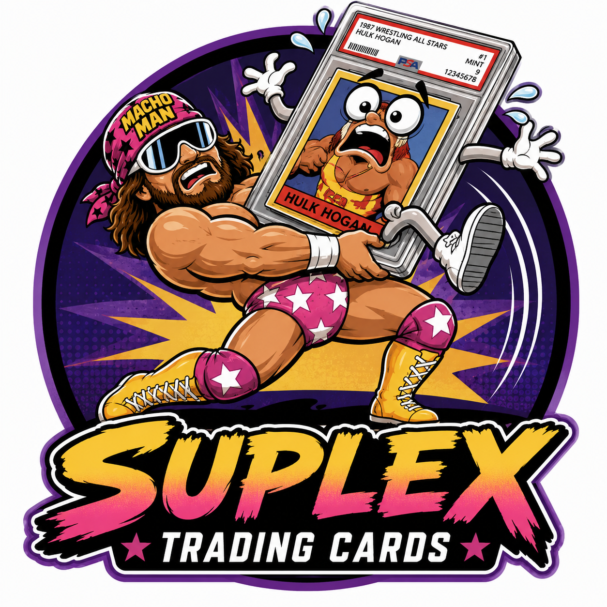

Pick any wrestler to see every card they appear on across all eras, promotions, and sets — from their first card to their latest Prizm.
Choose any name from the roster on the left to see their complete card history across all eras and sets.